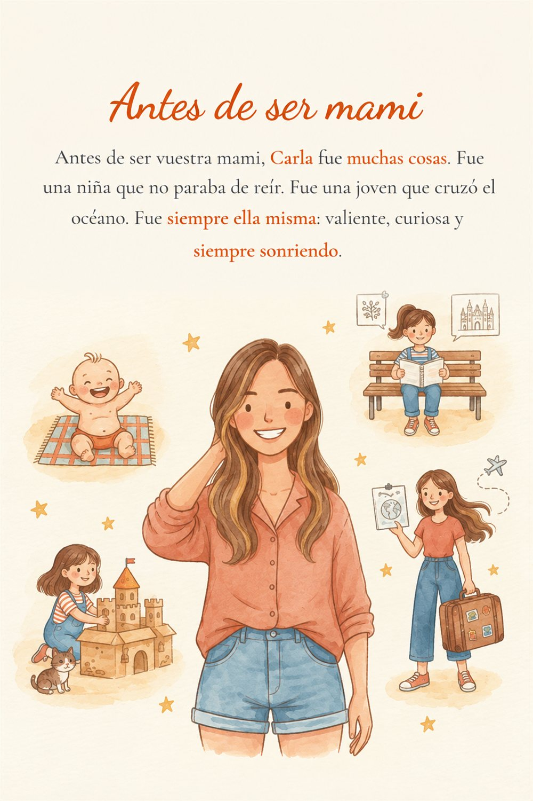

Antes de ser «mamá» fue una niña que no paraba de reír, una chica que viajó, que se equivocó y que se atrevió. Convertimos su historia real en un cuento personalizado ilustrado en acuarela, para que sus hijos la descubran, y para que ella, al leerlo, se reconozca otra vez.
Crear su libro →
Las tazas, las fotos y las joyas con nombre están bien. Pero lo que de verdad emociona es que sus hijos sepan quién es su madre: cómo era de pequeña, qué soñaba, cómo conoció a su pareja y qué sintió cuando llegó cada uno de ellos.
Lo escribimos desde cero con sus recuerdos reales y lo ilustramos en acuarela con sus rasgos reales a partir de una foto. El resultado es un libro de 30 páginas para leer juntos en el sofá y para guardar siempre.
Y no es solo para mamá: también lo puedes hacer para papá, para los abuelos, para los tíos o con tu propia historia.
Preguntas guiadas sobre su vida. Respondes con notas de voz, a tu ritmo. Puede ser una sorpresa.
Convertimos los recuerdos en un cuento en acuarela, con sus rasgos reales a partir de una foto.
Impreso en 21 × 28 cm, en tapa blanda o dura, listo para regalar en 2 o 3 semanas.
El libro llega entre 2 y 3 semanas después de enviarnos la historia. El Día de la Madre en España es el primer domingo de mayo, así que lo ideal es enviarnos la historia a principios de abril.
Sí. La historia nos la puede contar el papá, los abuelos, una hermana o una amiga, sin que mamá lo sepa. Respondéis con notas de voz y se guarda solo.
Claro. Puede contarla ella misma para sus hijos: cómo era de pequeña, sus sueños y sus aventuras, para que la conozcan de verdad.
45 € en tapa blanda y 63 € en tapa dura, con el envío incluido en los dos formatos.